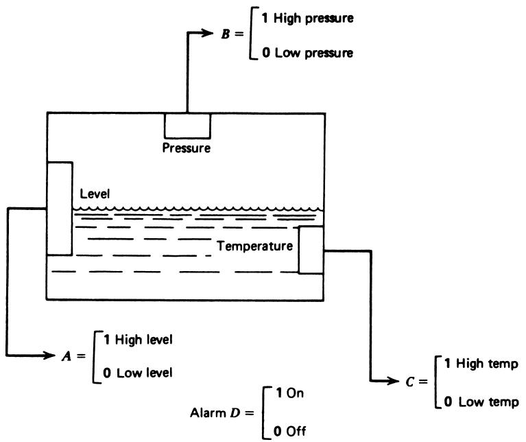
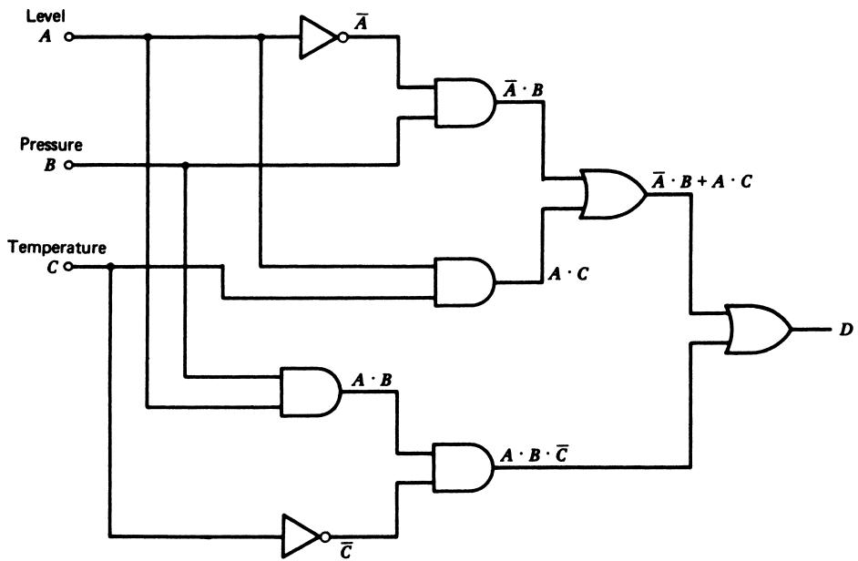
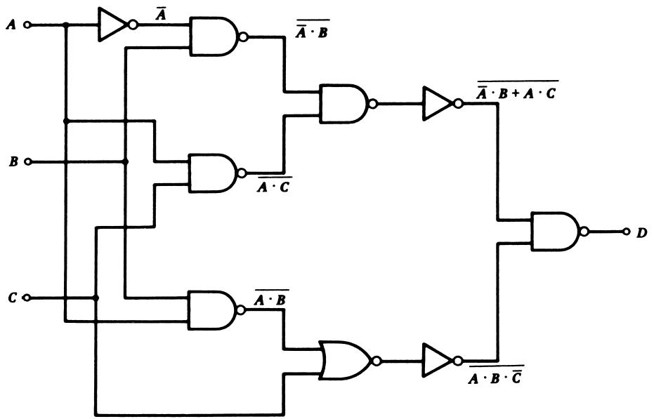
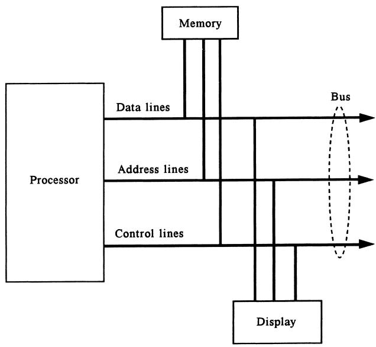
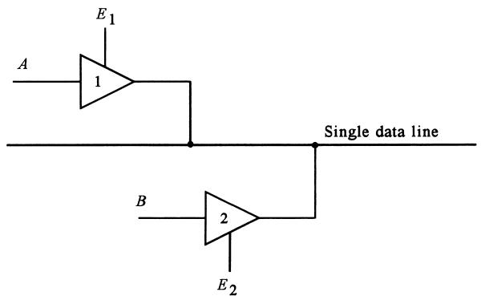

Digital Signal Conditioning & Digital Fundamentals
Instruments 3.1
Imron Rosyadi
Learning Objectives
By the end of this session, you should be able to:
- Explain what digital signal conditioning is and why it is needed in modern instrumentation and control.
- Describe how analog process variables (e.g., temperature, level) are represented using digital words.
- Convert between binary, decimal, octal, and hexadecimal representations (including fractional numbers).
- Interpret and construct simple Boolean algebra expressions for control logic.
- Map Boolean expressions into digital gate circuits (AND/OR and NAND/NOR).
- Describe the basic role of PLCs and computer interfaces (buses and tri‑state buffers) in control systems.
Why Digital Signal Conditioning?
- Modern systems are dominated by digital electronics and computers.
- Common ECE/control examples:
- Automotive ECUs (engine, ABS, airbags)
- Home appliances (washing machines, microwave ovens)
- Building automation (HVAC, security, lighting)
- Industrial process control (chemical plants, refineries)
- All these systems sense analog variables (temperature, pressure, motion, etc.) but internally use digital data.
What Is Digital Signal Conditioning?
- In process control, digital signal conditioning means:
- Representing analog process information in a digital format.
- Ensuring the digital representation is compatible with:
- Digital logic families and voltage levels
- Microcontrollers, PLCs, and computers
- Communication buses and networks
- Typically involves:
- A/D conversion (analog to digital)
- Scaling, encoding, or formatting digital data
- Error detection/correction, filtering in the digital domain
Note
Digital representation rarely increases raw accuracy; in fact, quantization and finite word length usually reduce it slightly. But the big win is robustness to noise, drift, and long‑distance transmission.
Why Use Digital Techniques in Control?
Beyond noise immunity, digital control offers:
- Multivariable control
- One computer can coordinate many variables and loops.
- Linearization of sensor outputs
- Nonlinear sensor curves (e.g., thermocouples) can be corrected in software.
- Complex control algorithms
- PID with scheduling, model predictive control, adaptive control, etc.
- Easy modification and upgrades
- Change control laws or tuning by updating software rather than rewiring.
- Networking and integration
- Multiple controllers, HMIs, and databases share data over a plant network.
Digital Fundamentals – Big Picture
To use digital techniques in process control we need a basic toolkit:
- Digital information and words
- Bits, binary representation of numbers.
- Number systems
- Decimal, binary, octal, hexadecimal; integer and fractional forms.
- Boolean algebra
- Represent logic conditions as equations.
- Digital electronics
- Logic gates implementing Boolean operations.
- Programmable Logic Controllers (PLCs)
- Industrial digital controllers for logic‑heavy tasks.
- Computer interfaces and tri‑state buffers
- How digital devices share a bus.
Digital Information: Bits and Logic Levels
- Digital signals are binary (two‑state) levels.
- Physical implementations can be:
- Two voltages (e.g., 0 V and 5 V)
- Two currents
- Two frequencies
- Two phases
- We label the states:
- Logic high: H or 1
- Logic low: L or 0

From Bits to Words
- A single binary signal (one wire) can carry only 1 bit of information.
- To represent richer information (e.g., a measured temperature), we use multiple bits together as a binary word.
- Example: a 6‑bit word
- Pattern:
101011₂ - That’s a 6‑digit base‑2 number, with each digit a bit.
- Pattern:
- General binary whole number:
- For bits \(a_n a_{n-1} \dots a_1 a_0\):
- \[N_{10} = a_n 2^n + a_{n-1} 2^{n-1} + \dots + a_1 2^1 + a_0 2^0\]
Tip
In instrumentation, the number of bits (word length) determines the resolution of your measurement.
Example 1 – Binary to Decimal (Whole Number)
Problem: Find the base‑10 equivalent of the binary whole number \(\mathbf{00100111_2}\).
Step 1 – Remove leading zeros: \[ 00100111_2 = 100111_2 \]
Step 2 – Write positional expansion: \[ N_{10} = (1)2^5 + (0)2^4 + (0)2^3 + (1)2^2 + (1)2^1 + (1)2^0 \]
Step 3 – Evaluate: \[ N_{10} = 32 + 0 + 0 + 4 + 2 + 1 = 39 \]
Answer: \[ \mathbf{00100111_2 = 39_{10}} \]
Example 2 – Decimal to Binary (Whole Number)
Problem: Find the binary equivalent of the base‑10 number \(47\).
We use successive division by 2, tracking the remainders.
\[ \frac{47}{2} = 23 \text{ with remainder } 1 \Rightarrow a_0 = 1 \]
\[ \frac{23}{2} = 11 \text{ with remainder } 1 \Rightarrow a_1 = 1 \]
\[ \frac{11}{2} = 5 \text{ with remainder } 1 \Rightarrow a_2 = 1 \]
\[ \frac{5}{2} = 2 \text{ with remainder } 1 \Rightarrow a_3 = 1 \]
\[ \frac{2}{2} = 1 \text{ with remainder } 0 \Rightarrow a_4 = 0 \]
\[ \frac{1}{2} = 0 \text{ with remainder } 1 \Rightarrow a_5 = 1 \]
Now read remainders from last to first: \(a_5 a_4 a_3 a_2 a_1 a_0 = 101111_2\).
Answer: \[ \mathbf{47_{10} = 101111_2} \]
Tip
Algorithm: - Divide by 2. - Record remainder (0 or 1). - Use the quotient as new dividend. - Stop when quotient is 0. - Read bits from last remainder to first.
Octal and Hexadecimal – Why Bother?
- Long binary strings are hard for humans to read.
- Octal (base 8) and hexadecimal (base 16) are convenient shorthand because:
- 1 octal digit = 3 binary bits.
- 1 hex digit = 4 binary bits.
- Octal digits: 0–7.
- Hex digits: 0–9, A, B, C, D, E, F.
Binary → Octal
- Group bits in 3s from the right.
- Example:
- \(101011_2 = 101\ 011_2\)
- \(101_2 = 5_8,\ 011_2 = 3_8\)
- So \(101011_2 = 53_8\).
Binary → Hex
- Group bits in 4s from the right.
- Example:
- \(10110110_2 = 1011\ 0110_2\)
- \(1011_2 = B_{16},\ 0110_2 = 6_{16}\)
- So \(10110110_2 = \text{B6H}\).
Fractional Binary Numbers
So far, we’ve handled whole numbers. What about fractions?
Decimal fractional numbers use negative powers of 10: \[ 0.473_{10} = 4 \cdot 10^{-1} + 7 \cdot 10^{-2} + 3 \cdot 10^{-3} \]
Binary fractional numbers use negative powers of 2: \[ N_{10} = b_1 2^{-1} + b_2 2^{-2} + \dots + b_m 2^{-m} \]
where:
- \(b_1 b_2 \dots b_m\) is the binary fraction (bits to the right of the “binary point”).
- \(m\) is the number of fractional bits.
Note
Conceptually, it’s exactly like decimal fractions, but every step to the right halves the weight (divide by 2) instead of dividing by 10.
Example 3 – Binary Fraction to Decimal
Problem: Find the base‑10 equivalent of the binary number \(\mathbf{0.11010_2}\).
We use: \[ N_{10} = b_1 2^{-1} + b_2 2^{-2} + \dots + b_m 2^{-m} \]
Here, \(m = 5\), and the bits are: \[ b_1 b_2 b_3 b_4 b_5 = 1\ 1\ 0\ 1\ 0 \]
So: \[ N_{10} = (1)2^{-1} + (1)2^{-2} + (0)2^{-3} + (1)2^{-4} + (0)2^{-5} \]
\[ N_{10} = \frac{1}{2} + \frac{1}{4} + 0 + \frac{1}{16} + 0 \]
\[ N_{10} = 0.5 + 0.25 + 0.0625 = 0.8125_{10} \]
Answer: \[ \mathbf{0.11010_2 = 0.8125_{10}} \]
Example 4 – Decimal Fraction to Binary / Octal / Hex
Problem: Find the binary, octal, and hex equivalents of \(0.3125_{10}\).
Step 1 – Decimal fraction to binary (successive multiplication by 2)
\[ 2(0.3125) = 0.6250 \Rightarrow b_1 = 0 \]
\[ 2(0.6250) = 1.250 \Rightarrow b_2 = 1 \]
\[ 2(0.250) = 0.500 \Rightarrow b_3 = 0 \]
\[ 2(0.500) = 1.000 \Rightarrow b_4 = 1 \]
The whole parts (0, 1, 0, 1) give bits: \[ 0.3125_{10} = 0.0101_2 \]
We can also write this as \(0.010100_2\) (trailing zeros do not change the value).
Step 2 – Binary fraction to octal
Group bits in 3s: \[ 0.010100_2 = 0.010\ 100_2 \]
\[ 010_2 = 2_8,\quad 100_2 = 4_8 \]
So: \[ 0.010100_2 = 0.24_8 \]
Step 3 – Binary fraction to hex
Group bits in 4s: \[ 0.010100_2 = 0.0101\ 0000_2 \]
\[ 0101_2 = 5_{16},\quad 0000_2 = 0_{16} \]
So: \[ 0.010100_2 = 0.50\mathrm{H} \]
Final Answer: \[ 0.3125_{10} = 0.0101_2 = 0.24_8 = 0.50\mathrm{H} \]
Tip
Algorithm for decimal fraction → binary: - Multiply fraction by 2. - Record whole part (0 or 1) as next bit. - Use new fractional part and repeat.
Boolean Algebra – Logic with True/False
- In control systems, many decisions are yes/no or true/false:
- Is the tank level high?
- Is pressure above its limit?
- Has the emergency stop button been pressed?
- Boolean algebra lets us:
- Represent such conditions as variables (1 = true, 0 = false).
- Combine them using logical operations:
- AND (·), OR (+), NOT (overbar).
Note
Boolean algebra is the language for specifying logic‑based control (interlocks, alarms, safety systems).
Example – Alarm Logic in a Mixing Tank
Consider a mixing tank with three monitored variables:
- \(A\): Level (1 = high, 0 = low)
- \(B\): Pressure (1 = high, 0 = low)
- \(C\): Temperature (1 = high, 0 = low)
We want an alarm output \(D\) (1 = alarm ON) with these conditions:
- Low level with high pressure.
- High level with high temperature.
- High level with low temperature and high pressure.

Constructing the Boolean Expression
For each condition, write a Boolean term:
- Low level with high pressure
- Low level means \(A = 0 \Rightarrow \bar{A} = 1\).
- High pressure means \(B = 1\).
- Condition 1 term: \(\bar{A} \cdot B\).
- High level with high temperature
- High level: \(A = 1\).
- High temperature: \(C = 1\).
- Condition 2 term: \(A \cdot C\).
- High level with low temperature and high pressure
- High level: \(A = 1\).
- Low temperature: \(C = 0 \Rightarrow \bar{C} = 1\).
- High pressure: \(B = 1\).
- Condition 3 term: \(A \cdot \bar{C} \cdot B\).
Now the alarm \(D\) should be true if any of these conditions is true:
\[ D = \bar{A} \cdot B + A \cdot C + A \cdot \bar{C} \cdot B \tag{2} \]
Tip
AND (·) collects requirements that must all be true. OR (+) combines alternative ways to trigger the alarm.
Digital Electronics – Logic Gates
Boolean operations are implemented in hardware using logic gates:
- AND gate → multiplication (·).
- OR gate → addition (+).
- NOT gate (inverter) → overbar.
Gates are built from transistors and belong to families (TTL, CMOS, etc.) with specific voltage levels.
Complex logic functions can be composed from:
- Basic AND, OR, NOT, or
- Universal gates: NAND and NOR.
Example 5 – Implementing Equation (2) with AND/OR Gates
We want to implement: \[ D = \bar{A} \cdot B + A \cdot C + A \cdot \bar{C} \cdot B \tag{2} \]
The gate‑level realization uses:
- Inverters to generate \(\bar{A}\) and \(\bar{C}\).
- AND gates for each product term.
- An OR gate to combine the term outputs.

Note
A direct translation from Boolean equation to gates:
- Products → AND gates.
- Sums → OR gates.
- Inversions → NOT gates (inverters).
Simplifying the Logic
The original expression: \[ D = \bar{A} \cdot B + A \cdot C + A \cdot \bar{C} \cdot B \]
can be simplified (using Boolean algebra) to: \[ D = A \cdot C + B \]
Interpretation:
- If pressure is high (\(B = 1\)), the alarm is ON regardless of level or temperature.
- Otherwise (\(B = 0\)), the alarm is ON if both level and temperature are high (\(A = 1, C = 1\)).
Important
Simplifying logic reduces cost, power, and failure points in physical implementations.
Example 6 – Implementing with NAND/NOR
We can also implement the logic using NAND and NOR gates.
One direct but inefficient way:
- Build the AND/OR implementation.
- Then replace each AND and OR with NAND/NOR gates plus inverters.
A more efficient approach:
- First simplify the expression.
- Then use Boolean theorems (e.g., DeMorgan’s) to match NAND/NOR structures.
For the simplified expression: \[ D = A \cdot C + B \]
We can rewrite using DeMorgan’s theorem: \[ D = A \cdot C + B = \overline{(A \cdot C)} \cdot \bar{B} \]
This form suggests a realization using NAND gates (which output the complement of AND) and an inverter.

Programmable Logic Controllers (PLCs)
- PLCs are industrial computers designed for:
- Digital logic control (replacement for relay panels).
- Harsh environments (temperature, vibration, electrical noise).
- Key characteristics:
- Rugged I/O modules for analog and digital signals.
- Programmable using ladder logic, function block diagrams, etc.
- Real‑time operation with deterministic scan cycles.
Note
In practice, Boolean equations and gate diagrams for process control are often implemented as PLC ladder logic, not discrete gates.
Computer Interface: The Bus
- A typical computer (or microcontroller) connects to external devices through a bus:
- Data lines: carry data values.
- Address lines: select specific devices/locations.
- Control lines: indicate read/write, interrupts, etc.
- All attached devices share these lines.

Warning
Sharing the bus safely requires that only one device drive a line at a time. Otherwise, you get bus contention and possibly hardware damage.
Tri‑State Buffers – Sharing a Bus Line
To prevent devices from fighting on a shared line, we use tri‑state buffers.
A tri‑state buffer has:
- An input (logic 0 or 1).
- An output.
- An enable control signal.
It can put the output into three states:
- Logic 0
- Logic 1
- High‑impedance (effectively disconnected)

- When \(E_1\) is active, \(A\) is placed on the bus; other buffers must be disabled.
- When \(E_2\) is active, \(B\) is placed on the bus.
Tip
High‑impedance state = “not driving the line” → like opening a switch.
Worked Problem 1 – Encoding a Sensor Reading
Scenario: You have a temperature sensor whose output after analog conditioning is mapped to a digital word between 0 and 63 (6 bits). At a given moment, the reading is \(101011_2\).
- What is the decimal value of this reading?
- If 0 corresponds to 0 °C and 63 corresponds to 63 °C, what temperature does this code represent?
- What is the hex equivalent of this binary code?
Solution
Convert \(101011_2\) to decimal: \[ 101011_2 = (1)2^5 + (0)2^4 + (1)2^3 + (0)2^2 + (1)2^1 + (1)2^0 = 32 + 0 + 8 + 0 + 2 + 1 = 43_{10} \]
Mapping 0–63 to 0–63 °C is 1:1, so \[ T = 43\ ^\circ\mathrm{C} \]
Convert \(101011_2\) to hex:
- Pad to 8 bits: \(00101011_2\).
- Group: \(0010\ 1011_2\).
- \(0010_2 = 2_{16}\); \(1011_2 = B_{16}\).
- So: \(101011_2 = \text{2BH}\).
Answers: - Decimal value: \(\mathbf{43_{10}}\). - Temperature: \(\mathbf{43\,^\circ\mathrm{C}}\). - Hex value: \(\mathbf{2BH}\).
Worked Problem 2 – Designing a Simple Interlock
Problem: A motor should run only if:
- The start button \(S\) is pressed (1 = pressed).
- The over‑temperature switch \(T\) is NOT tripped (1 = tripped).
- The emergency stop \(E\) is NOT engaged (1 = pressed).
Define a Boolean expression for the motor run signal \(M\), and show a simple gate‑level implementation.
Solution
Define each condition logically:
- Start pressed → \(S = 1\).
- Over‑temp not tripped → \(\bar{T} = 1\).
- E‑stop not pressed → \(\bar{E} = 1\).
Motor should run only when all are satisfied → AND: \[ M = S \cdot \bar{T} \cdot \bar{E} \]
Gate implementation:
- Use inverters on \(T\) and \(E\) to produce \(\bar{T}\) and \(\bar{E}\).
- Feed \(S\), \(\bar{T}\), and \(\bar{E}\) into a 3‑input AND gate.

Summary / Key Points
- Digital signal conditioning: representing analog process variables in digital form suitable for digital logic, PLCs, and computers.
- Binary words encode measured values; word length (number of bits) impacts resolution.
- Number systems (binary, octal, hex) are crucial for interpreting and manipulating digital data.
- Conversions between bases can be done systematically (division for integers, multiplication for fractions).
- Boolean algebra provides a compact way to express logical control conditions.
- Logic gates (AND, OR, NOT, NAND, NOR) are physical realizations of Boolean operations.
- PLCs implement digital logic for industrial control, often replacing relay panels.
- Computer interfaces use shared buses; tri‑state buffers ensure only one device drives a line at a time.
Formulas Summary
Binary whole number (to decimal) \[ N_{10} = a_n 2^n + a_{n-1} 2^{n-1} + \dots + a_1 2^1 + a_0 2^0 \]
Binary fraction (to decimal) \[ N_{10} = b_1 2^{-1} + b_2 2^{-2} + \dots + b_m 2^{-m} \]
Successive division by 2 (decimal → binary integer)
- Repeatedly divide the decimal number by 2.
- Record remainders; read them in reverse order as bits.
Successive multiplication by 2 (decimal fraction → binary)
- Repeatedly multiply the fractional part by 2.
- The integer parts of each result form the bits in order.
Boolean expression for mixing‑tank alarm \[ D = \bar{A} \cdot B + A \cdot C + A \cdot \bar{C} \cdot B \] Simplified: \[ D = A \cdot C + B \]
Example interlock logic \[ M = S \cdot \bar{T} \cdot \bar{E} \]
Interactive Deck
Warmup: Binary to Decimal
Use this code cell to convert a binary string to decimal. Change the binary_str variable and click Run Code.
Decimal to Binary
Now convert a non‑negative integer to binary using the successive division by 2 method. Modify n and re‑run.
Explore Binary Fractions – Manual Conversion
Use the binary fraction formula from the main deck: \[ N_{10} = b_1 2^{-1} + b_2 2^{-2} + \dots + b_m 2^{-m} \]
Edit binary_fraction (just bits after the point) and run the cell.
Decimal Fraction to Binary – Successive Multiplication
This implements the “repeated multiply by 2” algorithm from the text. Change x and max_bits to see more/less precision.
Converting Between Binary, Octal, and Hex
This code groups bits in 3s (octal) and 4s (hex) to convert a binary string.
Reactive Demo: Word Length and Resolution (Sliders + Plotly)
Use the sliders to change the number of bits and the full‑scale range of an A/D converter. We’ll compute and plot the quantization staircase.
Reactive Demo: Binary Fraction Explorer
Use the slider to select how many fractional bits to keep. We’ll display the approximate value of a fixed target number (e.g., 0.7) as a binary fraction.
Reactive Boolean Logic: Truth Table Generator
Control three Boolean inputs with buttons, and let Python compute the alarm condition from the mixing tank example: \[ D = \bar{A} \cdot B + A \cdot C + A \cdot \bar{C} \cdot B \]
Interactive Exercise: Design Your Own Logic
Now define your own Boolean logic for a motor enable signal (M).
Conditions (suggestion):
- (S): Start command (1 = requested).
- (P): Pressure OK (1 = within safe range).
- (T): Temperature OK (1 = within safe range).
You can propose your own rule, e.g.: \[ M = S \cdot P \cdot T \]
Use the toggles and modify the expression inside the code.